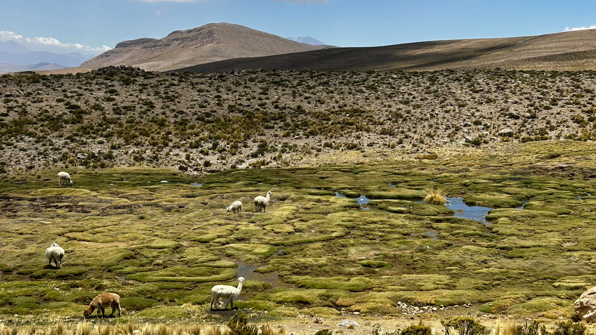
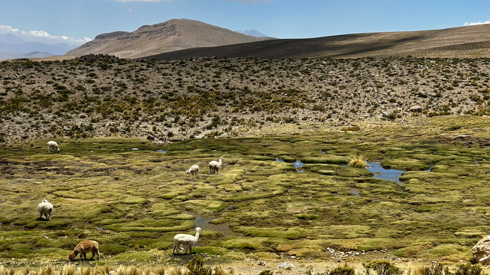
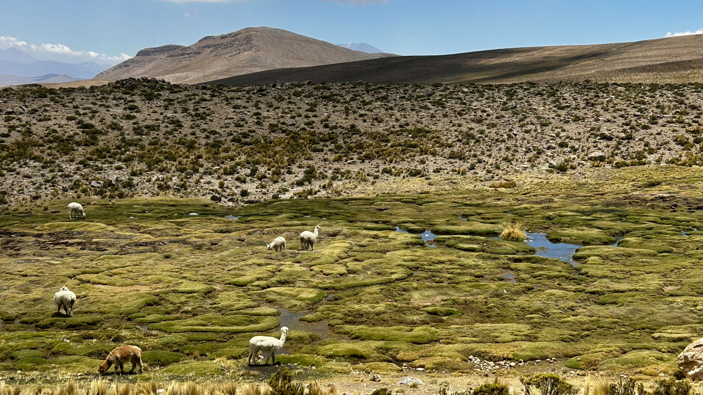

Rankiem opuściliśmy hotel — Arequipa za nami, a przed nami jedna z największych atrakcji południowego Peru: Colca Canyon. Droga prowadziła krętą trasą między wulkanami, przez przełęcze i andyjskie pustkowia, z widokami, które zapierały dech o poranku.
Kiedy dojechaliśmy do rejonu, gdzie wysokość osiągała około 4 910 m n.p.m. (płaskowyż Pata Pampa / El Paso), zatrzymaliśmy się na chwilę — świat wydawał się rozciągać bez końca: laguny, andyjskie mokradła, jeziora, porośnięte trawą doliny, a wszystko w świetle porannego słońca, z mgłą unoszącą się nad wodą. W oddali pasły się wikunie, lamy, alpaki — patrzyły na nas ciekawie, ale i z rezerwą.

Dotarliśmy do miasteczka Chivay — wejście do kanionu. Kolorowe domy, kobiety w tradycyjnych strojach, suszące się zioła i kukurydza — wszystko wyglądało jak z innej epoki.
Po południu zrelaksowaliśmy się w gorących źródłach w La Calera: woda była ciepła, lekko siarkowa, otoczona górskimi wzgórzami — zanurzaliśmy się z ulgą, jakbyśmy zmywali z siebie kurz pustyni i długą drogę.
Zaraz po zachodzie słońca – nocny spacer po Chivay: ciche uliczki, światła lamp, odgłosy rozmów z chat i domów — poczuliśmy, że jesteśmy daleko od cywilizacji, bliżej natury i tradycji.